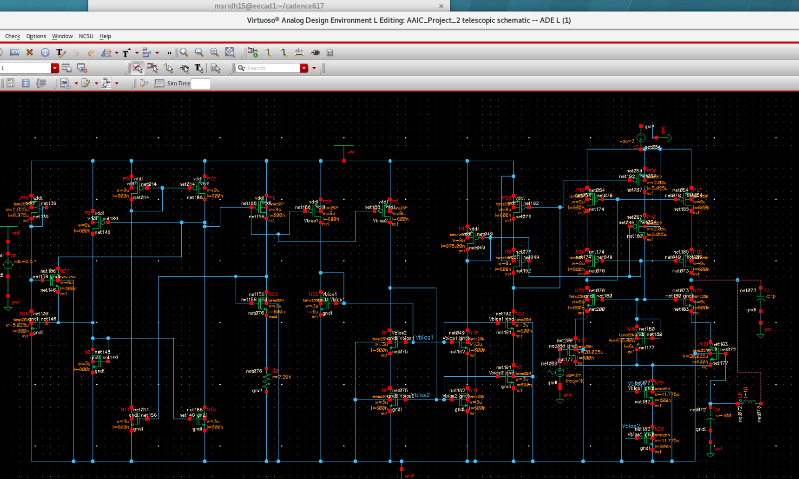
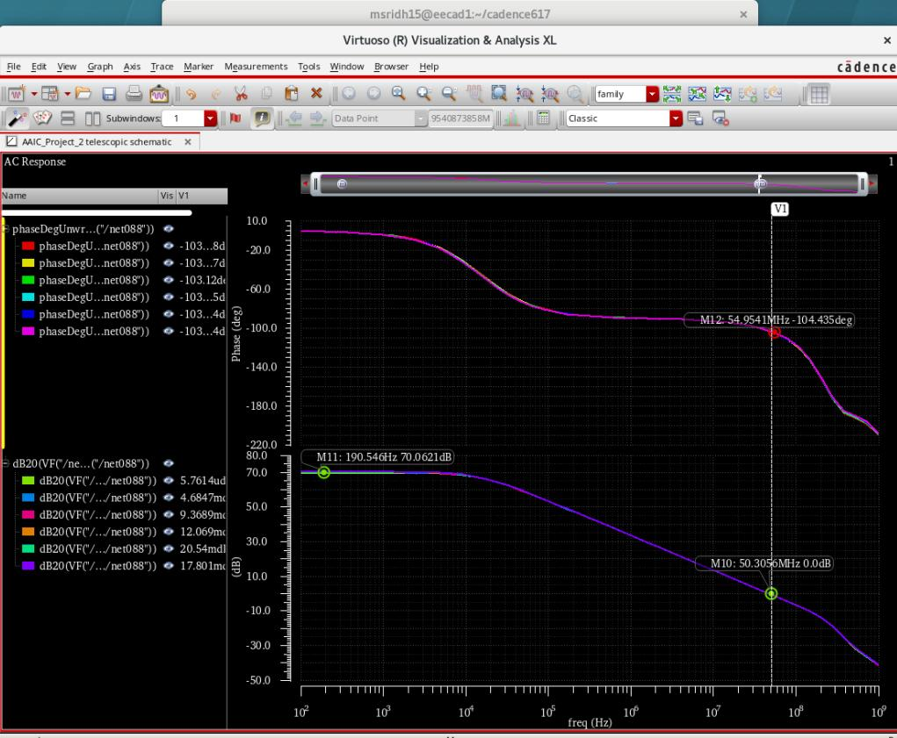
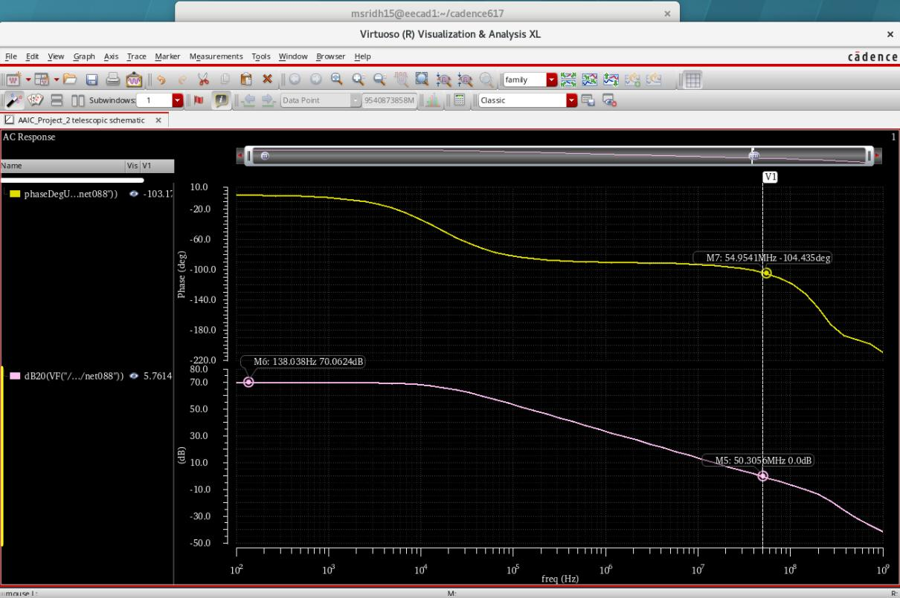
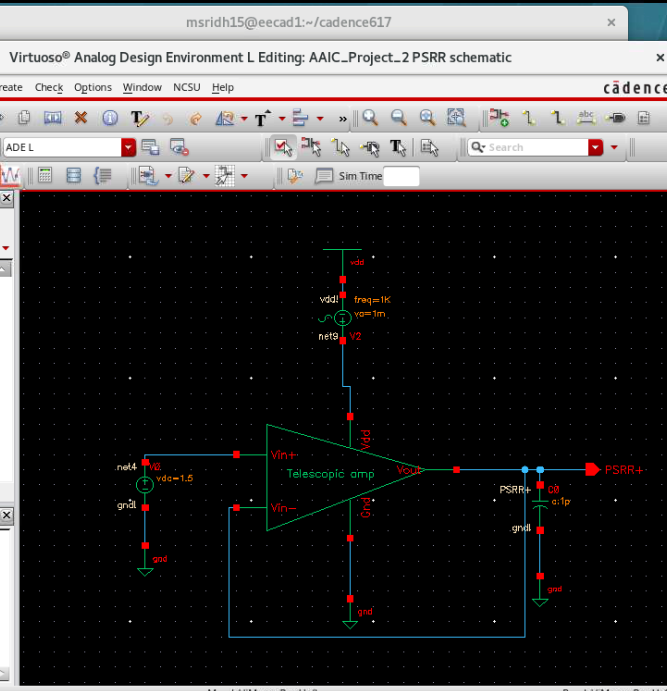
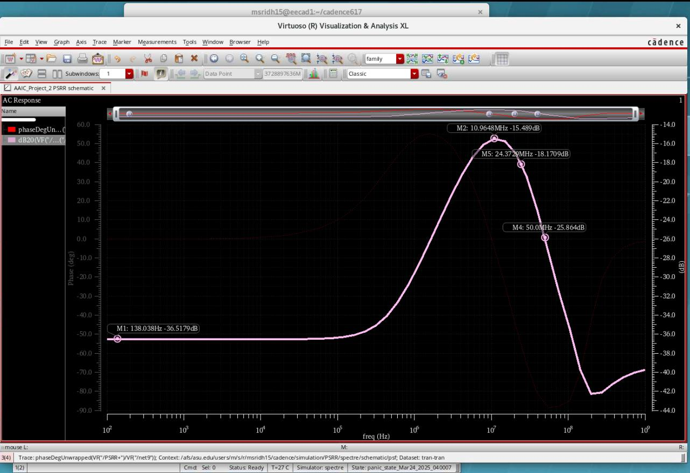
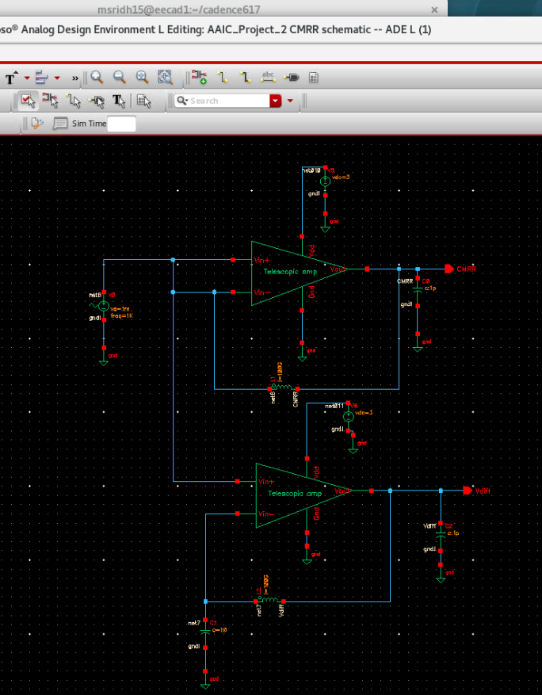
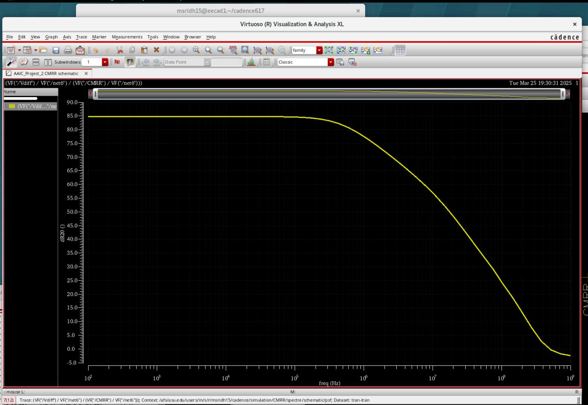
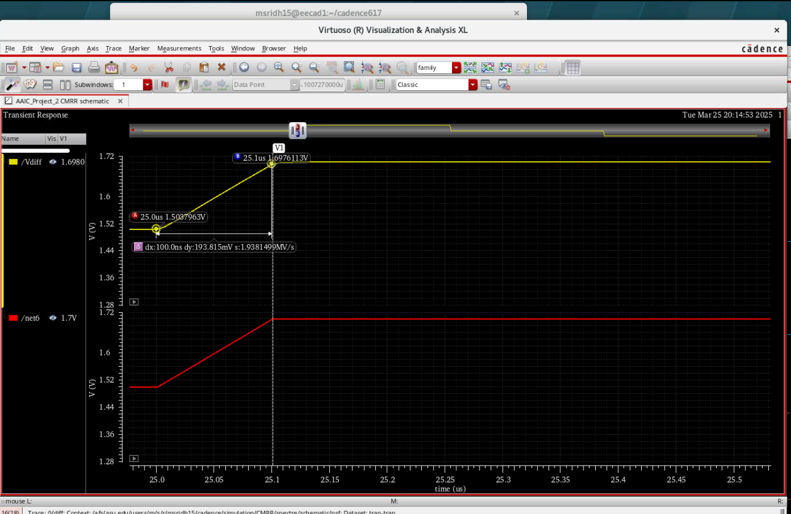

Project Overview
This project presents the design and simulation of a telescopic cascode differential amplifier optimized for high gain, low power consumption, and robust analog performance. The design was implemented and verified using Cadence Virtuoso and Spectre simulations under realistic load and bias conditions.
Circuit Architecture
Complete transistor-level schematic of the telescopic cascode differential amplifier including bias generation networks. The cascode structure enhances output resistance, enabling high gain while maintaining low power dissipation.
AC Response: Gain and Bandwidth
Frequency response of the amplifier showing a DC gain greater than 50 dB and a unity-gain bandwidth exceeding 50 MHz with a 1 pF capacitive load. Gain variation across input common-mode voltages was analyzed to ensure robust operation.
Stability Analysis
Phase margin measured in unity-gain configuration at nominal bias conditions. The amplifier demonstrates stable closed-loop operation with sufficient phase margin for reliable analog performance.
Power Supply Rejection Ratio (PSRR)
PSRR simulation testbench where a small-signal AC source is injected at the supply rail while the input is grounded. The output response is measured to quantify the amplifier’s ability to suppress supply noise.
PSRR magnitude versus frequency plot. The high low-frequency PSRR validates the effectiveness of the cascode topology and biasing network in rejecting power supply disturbances.
Common-Mode Rejection Ratio (CMRR)
CMRR simulation setup where identical AC signals are applied to both input terminals of the differential amplifier. The resulting output response quantifies rejection of common-mode signals.
CMRR magnitude as a function of frequency, demonstrating excellent low-frequency common-mode rejection and well-matched differential signal paths.
Transient Response and Slew Rate
Large-signal transient response used to extract slew rate. The amplifier achieves a slew rate of approximately 1.93 MV/s, ensuring accurate tracking of fast input transitions without distortion.